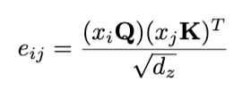

Background
Transformer
The vanilla Transformer as proposed in [7] supports an encoder-decoder structure. They are composed of multiple identical blocks, where each block consists of a multi-head self-attention module connected to a feed-forward network.
Self-Attention
As explained in [7] and [8], each attention head operates on an input sequence of elements, and computes a new sequence of the same length. It follows a QKV (query, key, value) based model. Each output element is computed as
and each weight coefficient is computed via softmax
where

Q, K, V represent the weight matrices for query, key, and value respectively.
Positional Encoding
A vanilla Transformer has no recurrence and is permutation-invariant, instead utilizing positional encoding added to input embeddings to model the sequence information. In general, positional embeddings follow one of two archetypes: absolute or relative. Absolute positional embeddings encode the absolute position of a unit within a sequence. Relative embeddings, on the other hand, encode the position of a unit relative to other units in a sequence. Both methodologies have had strong results, but neither has ever been proven to have a clear advantage over the other [9].
Learned Absolute Positional Encoding
The paper [10] proposed what we call a learned absolute positional encoding which uses an end-to-end approach for learning embeddings for each positional unit ∈ { where } is the max length of any sequence.
Sinusoidal Positional Encoding
In [7] the positional encoding proposed is an absolute positional encoding using sine and cosine functions
which we will call a sinusoidal positional encoding scheme.
Relative Positional Encoding
Finally, we will define a relative positional encoding as the one originally proposed in [8]. Relative positional encoding is incorporated into the Transformer by modifying the self-attention mechanisms in eq. (1):

and eq. (3) to
The values and are learned embeddings dependent on the positional difference between and .
Methods
Input Data
Each datapoint for the model represents a match of League of Legends. A match is modeled as a sequence of "events" and a vector of aggregate statistics. In other words,
where each
represents an event, and
represents all summarizing data about the match.
Every "event" vector
includes information about:
- The kind of event it is
- The specific player in the match
- The team they are on
- The position on the game map
- The cumulative gold, experience points, and CS (creep score) values
Event types encapsulate key moments in a game such as building kills, champion kills, elite monster kills, level-ups, and ward placements. Depending on the event, additional information may be needed, such as participating players for kills.
Information is encoded into these vectors depending on whether they are identifiers or numerical. If the information is an identifier, we use one-hot encoding. Otherwise, we concatenate the value as is. For example:
- The player information is encoded as a 10-dimensional one-hot vector since every match has 10 players.
- Cumulative gold is encoded as the number itself.
All numerical data is normalized using min-max scaling. Furthermore, all non-timestamp data is encoded by a learned MLP before being inputted into the transformer. The original data
has dimensions:
For both inputs, we use an embedded hidden dimension of 10 ().
Transformer
The transformer uses the vanilla encoder architecture from Attention is All You Need. Under computational resource constraints and considering the size of our data, the parameters are as follows:
- Hidden dimension of attention heads: 128
- Hidden dimension of feed-forward network: 256
- Number of attention heads: 8
- Number of layers: 6
Additionally, we apply a causal attention mask.
The transformer only encodes the sequential event data
.
Given this input, the transformer will output the latent variables
.
Output Layer
With the encoded sequential data
,
we will concatenate it with the encoded summary data
,
where is a linear layer.
Finally, the model outputs a matrix of logits
,
where is an MLP. Each match has 10 players, and
is the number of possible ranks. Thus, each match gives us
players to estimate their rank. In our data,
.
Time-Based Positional Encodings
We conduct several experiments with various types of positional encodings for the sequential data
.
Every event
contains timestamp data. Thus, given a sequence
,
we have a timestamp sequence
.
Our timestamp data is given in milliseconds.
No Encoding
With no encoding, we keep the timestamp data
as part of the datapoint
.
The timestamp data is normalized, and then encoded as part of
through the transformer as usual.
Learned Absolute Encoding
Absolute encoding means we encode the timestamps
into a vector
to be added to our encoded inputs
.
Thus, the transformer encodes the input
.
There are two ways we can encode
into
:
-
Bucketed timestamp embeddings: We bucket timestamps into time intervals. Based on the discretized time interval, we can produce an embedding
,
where
,
where
is the maximum number of buckets the time series data can occupy. We chose to bucket our timestamp data into 10-second buckets.
-
MLP timestamp embeddings: Timestamp data
is embedded using an MLP to produce a
embedding. Before embedding, timestamp data is normalized using min-max normalization.
Both methods are optimized and learnable as part of the model.
Sinusoidal Encoding
We use the same encoding procedure as in the Sinusoidal Positional Encoding section above, but instead use "timestamp" in place of "pos". Before encoding, timestamps are normalized using min-max normalization.
Learned Relative Encoding
Following the same scheme as presented in the Relative Positional Encoding section above, but instead of using positional differences between datapoints
and
,
we will use the timestamp differences between datapoints. Similar to absolute encoding, the differences are first bucketed into time intervals and then encoded into the representations
for
Similar to learned absolute encodings, we can choose to bucket our timestamp differences into buckets (we chose 10-second buckets) or use an MLP to encode the true timestamp values.
Results
Model Performance
In our experiments, we ran our model using batch size of 32, AdamW optimizer, and cosine annealing learning rate. We had 33812 total number of datapoints, and split into 23668, 6796, and 3348 datapoints for training, validation, and testing respectively. Experiments were ran for 15 epochs.
Knowing the sinusoidal is a well-tested and well-performing encoding, our initial experiments were to estimate over 31 separate ranks. Noticing the model struggled with the high number of classes, we decided to consolidate our classes into 8 classes, as we note that similar ranks can be considered the same class. Results for sinusoidal encoding for 31 and 8 classes are show above.
Deciding to stick with 8 classes, we evaluated our different models with different encodings using the models loss values. We ran four experiments for estimating over 8 ranks: no encoding, absolute encoding using bucketed timestamp embeddings, sinusoidal encodings, and relative encodings. These experiments are called "no encoding", "absolute encoding", "sinusoidal encoding", and "relative encoding" respectively.
Individual plots for training and validation losses over epochs for each experiment is shown in the figure above, as are combined plots for training loss and validation loss over epochs. A full table of the final loss values including the test loss is in the table in the table below.
Computational Performance
In terms of computational limits, no encoding, absolute encoding, and sinusoidal encoding all trained at a rate of around 2.5 seconds per iteration. Meanwhile, relative encoding trained at a rate of around 0.7 seconds per iteration.
No encoding, absolute encoding, and sinusoidal encoding all occupied about 9.3GB of GPU RAM on Google Colab's A100. Relative encoding, however, required about 20GB of RAM.
Discussion
Based on our final loss values, our model unfortunately failed to learn much beyond uniformly guessing across all classes. However, we were still able to gain valuable insights into the benefits and limitations of each encoding method. For one, we note that sinusoidal encoding achieved the best loss values, followed by no encoding and absolute encoding, with relative encoding performing the worst. Clearly, it is difficult for a neural network to learn a representative embedding for timestamps that is more useful and informative than a direct function of the timestamp itself. It is worth noting that absolute encodings do have slightly faster convergence than other encoding methods.
Beyond model accuracy, we noticed that the different encoding methods also have different computational overhead. No encoding, sinusoidal encodings, and absolute embeddings all had approximately similar runtimes and allocated around the same amount of space. Relative encodings, on the other hand, created significant overhead, taking almost three times as long to train. Furthermore, it required almost twice as much space in RAM. This makes sense as relative encoding requires modifications to the attention matrices themselves, which are large tensors to begin with. However, based on our results, we can confidently say that relative encodings are not worth the extra computational overhead.
Due to computational and time constraints, we were unable to test absolute and relative encodings using MLPs. Furthermore, we believe the model architecture needs some modification as the model capacity was not robust enough to solve our problem of predicting ranks. However, we are confident that the best encoding for timestamps is the sinusoidal one, as it both adds a layer of complexity by creating a higher-dimensional representation while also maintaining simplicity.